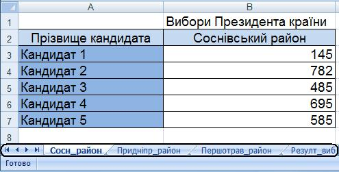
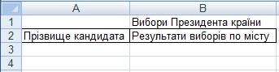
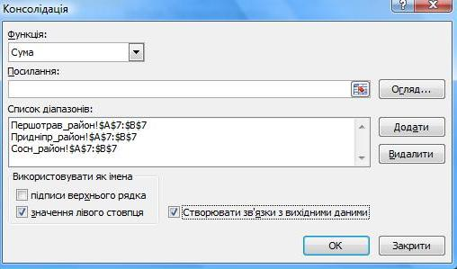
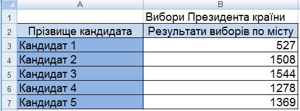

Вправа 5.4. Консолідація даних зведеної таблиці
Припустимо, що дані стосовно голосування на виборах Президента країни у трьох районах міста розташовані на трьох різних аркушах електронної книги. На четвертому аркуші потрібно обчислити загальну кількість голосів по місту, яку набрали кандидати у Президенти (рис. 5.43).

Рис. 5.43. Робоча книга, що містить дані про голосування за районами міста
Рис. 5.43. Робоча книга, що містить дані про голосування за районами міста
- Відкрийте книгу Вправа_5_4.хlsx з архіву заготовок або самостійно створіть таку таблицю, як на рис. 5.43, скопіюйте її на аркуші районів та змініть у копіях таблиць дані.
- Перейдіть на аркуш Результ_виб і виконайте консолідацію даних.
- Створіть таблицю, зображену на рис. 5.44.

Рис. 5.44 Таблиця для відображення консолідованих даних - Виділіть клітинку АЗ та виконайте команду Дані
 Консолідація.
Консолідація. - У вікні Консолідація зі списку Функція виберіть функцію, за допомогою якої виконуватиметься консолідація: Сума.
- В області Використовувати як імена встановіть прапорець значення лівого стовпця (рис. 5.45).
- Сформуйте список діапазонів, виконавши такі дії:
- клацніть кнопку
 справа від поля Посилання, перейдіть до аркуша Сосн_район, виділіть діапазон АЗ:В7 та у вікні Консолідація клацніть кнопку Додати;
справа від поля Посилання, перейдіть до аркуша Сосн_район, виділіть діапазон АЗ:В7 та у вікні Консолідація клацніть кнопку Додати; - так само додайте діапазони даних, що консолідуватимуться, з аркушів Придніпр_район та Першотрав_район (ці діапазони буде виділено автоматично).

Рис. 5.45. Вікно Консолідація із заповненим списком діапазонів - клацніть кнопку
- Клацніть кнопку ОК, і підсумкова таблиця виборів набуде такого вигляду, як на рис. 5.46. Подані у ній значення — це суми даних з трьох аркушів. Збережіть електронну книгу.

Рис. 5.46. Таблиця з результатами голосування по місту
- Створіть таблицю, зображену на рис. 5.44.